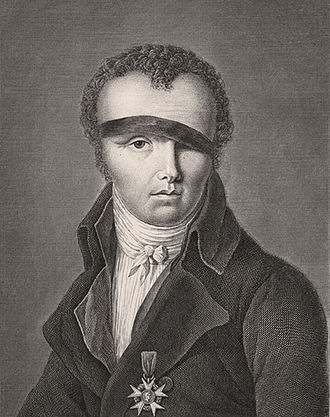
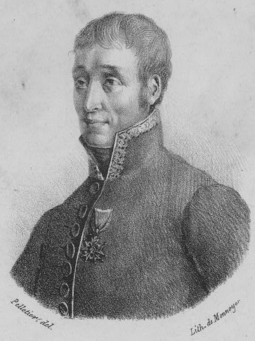
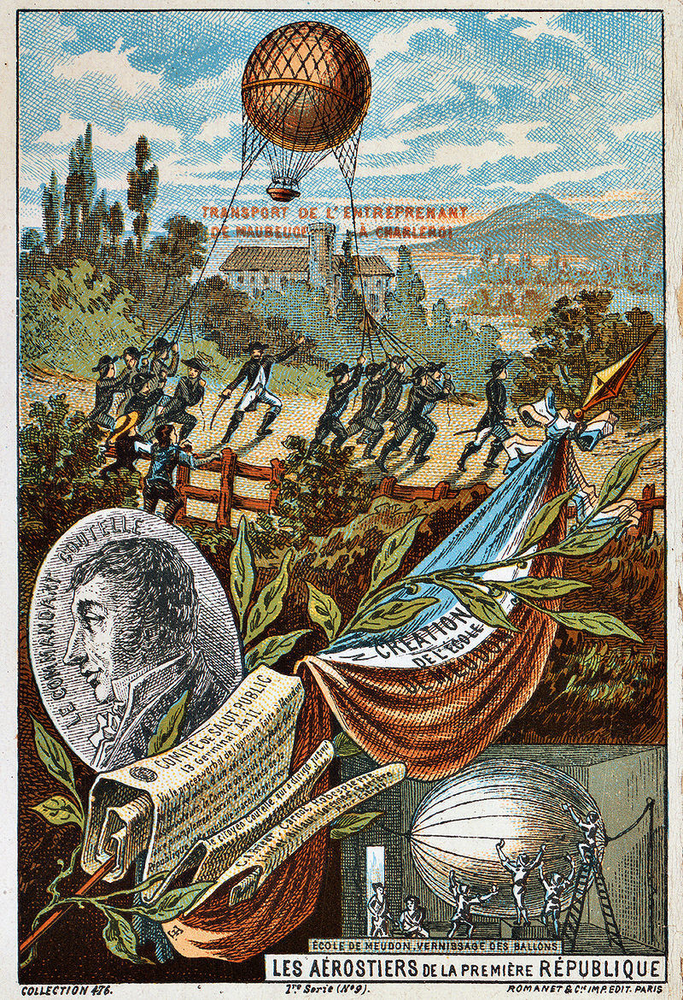
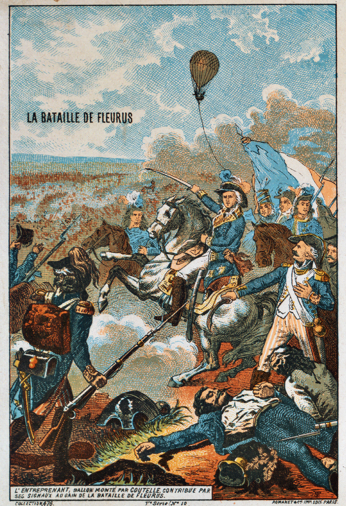
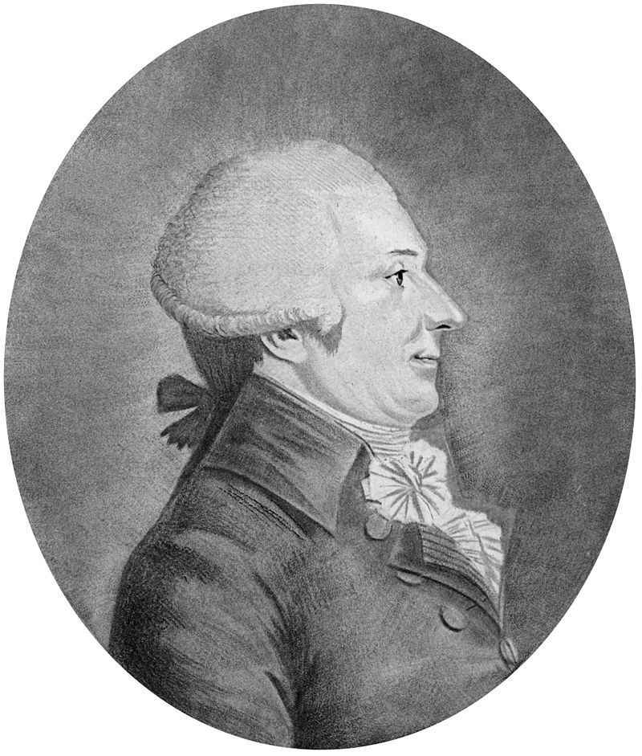

엇갈린 평가 - 나폴레옹과 프랑스 공군 이야기 (제2편)
게시: 2018-04-15T20:00:54+09:00
주르당의 어설픈 라임으로 조롱 받으며 파리로 돌아온 쿠텔을 맞이한 것은 서슬퍼런 국민공회 공안위원회(le Comite de salut public)였습니다. 그렇다고 공안위원회가 쿠텔을 단두대로 보낸 것은 아니었고, 정반대로 전폭적인 지원을 해주었습니다. 공안위원회는 당시 국내외 반혁명세력과의 투쟁을 위한 노력을 아끼지 않고 있었으므로, 과학을 통해 구시대의 적을 무찌른다고 하면 뭐든 해줄 기세였습니다. 샤또 드 뫼동(Chateau de Meudon)에서 몇 차례의 기구 기술에 대한 테스트가 이루어진 뒤, 공안위원회는 아예 세계 최초의 공군 무기창인 항공 개발 센터(le centre de developpement aerostatique)를 창설했습니다. 여기서는 나중에 나폴레옹의 이집트 원정에도 참여하고 무엇보다 현대적인 연필을 개발한 것으로 유명한 학자 콩떼(Nicolas-Jacques Conte)가 연구를 지휘했습니다. 그는 이 기관에서 기구의 형태와 재질, 수소 가스 생산의 효율화 등을 연구 발전시켰습니다.

(콩테는 나폴레옹을 따라 이집트로 간 학자들 중 하나였습니다. 넬슨에 의해 프랑스 함대가 궤멸되어 프랑스 본토와의 보급로가 완전히 끊어진 뒤에도 프랑스군이 보급품 부족으로 말라죽지 않은 것은 100%까지는 아니더라도 70% 정도는 콩테 덕분이었습니다. 콩테는 빵부터 땔감, 탄약에 이르기까지 모든 것을 현지에서 만들어 냈을 뿐만 아니라, 이집트 땅에서 기구를 띄워올리기도 했습니다. 나폴레옹은 그를 '모든 것에 뛰어난 재주꾼'이라고 평가했습니다. 불행히도 그는 프랑스로 귀환한 이후 얼마 안되어 1805년 50세의 젊은 나이에 요절했습니다.)
이 연구기관에서의 성과를 흡족하게 여긴 공안위원회는 1794년 4월 2일, 급기야 세계 최초의 공군인 기구 중대(la Compagnie d'Aerostiers)를 창설하기에 이릅니다. 이 중대는 손재주가 좋은 20명의 사병과 2명의 상병, 병장과 상사 1명씩, 그리고 대위와 그를 보좌할 중위 1명이 배정되었습니다. 그리고 그 대위로는 주르당에게 조롱을 당했던 화학자 쿠텔, 그리고 중위로는 쿠텔의 조수였던 로몽이 임관되었습니다. 그야말로 당시에는 보기 드물었던 첨단 기술 부대였습니다. 그리고 이들에게 주어진 임무도 첨단 기술에 어울리는 것이었습니다. 바로 정찰, 신호에 의한 통신, 그리고 선전물 배포였습니다. 한 단어로 요약하면 바로 정보전이었지요.

(세계 최초의 공군 비행단장이 된 쿠텔(Jean-Marie-Joseph Coutelle)입니다. 그는 사실 제대로 된 화학자는 아니었고, 샤를의 법칙으로 유명한 샤를(Jacques Alexandre César Charles)과 친했던 덕분에 기구에 관심을 가지게 된 엔지니어 정도였습니다. 그가 프랑스에 남긴 공로는 하나 더 있는데, 오늘날 파리 콩코드 광장에 이집트 현지에서 가져온 3천년 묵은 오벨리스크가 서있게 된 것에 그가 간접적으로 기여를 했다고 합니다.)
새롭게 창설된 이 기구 중대의 사기는 매우 높았습니다. 장교들은 자신들이 만든 과학 기구를 실제 상황에 적용하여 공화국으로부터 급여를 받아가며 조국을 위해 사용한다는 점에 희열을 느꼈습니다. 사병들은 아무리 생각해도 이 부대에 있으면 적의 총알이나 포탄에 맞을 것 같지는 않다는 점에서 꽤 만족스러웠습니다. 창설 직후, 이 사기충천의 부대에게 주어진 첫 임무는 다소 꺼림직한 것이었습니다. 벨가에 접경 지역의 모베르쥬(Mauberge)로 가서 다름 아닌 주르당의 부대에 합류하라는 것이었으니까요. 그러나 지난 번과는 다른 점들이 좀 있었으므로 이번에는 주르당에게 대놓고 조롱을 당하지는 않았습니다. 이번에는 쿠텔이 한낱 일반 시민(citoyen)이 아니라 당당한 육군 대위(capitaine)였고, 또 지난 번처럼 현금 5만 리브르를 달랑 들고 온 것이 아니라 훨씬 더 인상적인 물건을 들고 왔기 때문이었습니다. 바로 기구였습니다. 이름은 앙트르프레낭(L'Entreprenant) 호로서, 영화 스타 트렉에 나오는 우주선 엔터프라이즈(Enterprise) 호와 유사한 뜻이었습니다. "진취적, 적극적"이라는 뜻이었지요.
기구 중대는 도착과 동시에 가열로를 만들어 수소 생산을 시작했습니다. 앙트르프레낭 호의 첫 임무 비행은 그리 오래 기다리지 않아도 되었습니다. 바로 6월 2일, 오스트리아군이 포격을 가해오자 그에 대한 정찰을 하기 위해 앙트르프레낭 호가 출격한 것입니다. 쿠텔은 아군 지역인 모베르쥬에서 떠오른 기구를 타고 오스트리아 및 네덜란드군의 동향을 훤히 내려다 보며 지상과 연결된 밧줄을 통해 상세한 보고서를 계속 내려보냈습니다. 기구에서 망원경을 통해 보면 거의 25km 밖의 상황까지 꽤 상세히 볼 수 있었으니 군용 정찰 활동에 있어서는 정말 꿈의 병기라고 할 수 있었습니다. 다만 이 날 양측 간에 전투가 벌어지지는 않았으므로, 이 날의 비행은 최초의 실전 투입으로 기록되지는 못했습니다.
한편, 오스트리아-네덜란드군 측에서는 기구의 등장을 보고 깜짝 놀랐습니다. 그들은 '전투에 기구를 사용하는 것은 신사답지 못한 일이고 전쟁 규칙에 위반되는 일'이라며 프랑스군 측에게 항의하기도 했고, 앙트르프레낭 호를 향해 총격을 가하기도 했습니다. 그러나 물론 사정거리 훨씬 밖에 있던 앙트르프레낭 호에는 아무런 위협이 되지 못했습니다. 그리고 앙트르프레낭 호의 비행은 뜻하지 않은 효과도 낳았습니다. 오스트리아-네덜란드군 장교들의 상당수는 교양 있는 신사 계급 출신이었고 따라서 기구라는 물건의 존재와 그 원리에 대해서 아는 사람들이 꽤 있었습니다. 그러나 병사들은 그렇지 않았습니다. 대부분 시골 농촌 출신의 문맹자였던 오스트리아-네덜란드군 병사들은 프랑스군 상공에 난데없이 나타난 둥근 물체를 보고 '프랑스 놈들이 혁명을 하면서 성당과 신부들을 박해한다더니, 정말 악마가 프랑스 혁명군과 함께 한다'라며 겁을 먹기도 했다고 합니다. 이런 심리전 측면에서의 효과는 곧 뒤이어 벌어질 플뢰뤼스 전투에서도 크게 발휘되었습니다.
모베르쥬에서의 작전을 끝낸 기구 중대에게 내려진 다음 명령은 샤를르루아(Charleroi)로 이동하라는 것이었습니다. 당시 기구는 어떻게 이동을 했을까요 ? 공군답게 모든 장비와 인력을 싣고 가볍게 두둥실 날아서 이동했을까요 ? 물론 아니었습니다. 요즘이라면 수소 가스를 빼서 기구를 납작하게 접은 뒤 트럭으로 실어나르겠지요. 그러나 아무리 라브와지에-므니에 공법에 의해 싸고 쉽게 수소를 만들 수 있게 되었다고 해도, 여전히 수소는 만들기 어려운 가스라서 그렇게 쉽게 버렸다가 재빨리 다시 만들 수가 없었습니다. 특히 이번에는 당장 작전에 투입되어야 하는 상황이었습니다. 그래서 고안된 방법은 과학기술 부대라는 이름이 쑥스러운 것이었습니다. 즉, 무거운 추를 매달아 고도를 낮춘 기구에 밧줄을 연결하여 둥둥 띄운 채로, 24명의 병사들이 거의 50km에 걸친 거친 벌판을 가로질러 질질 끌고 이동했습니다.

(창공을 지배하는 자랑스러운 혁명의 날개인 공화국 공군의 웅장한 이동 모습입니다. 사실 저 상황에서 굳이 지휘 장교가 칼을 뽑아들고 지휘할 필요는 없는데 말입니다.)
비록 이렇게 공군답지 못한 모양새로 이동하긴 했지만, 쿠텔의 기구 중대는 플뢰뤼스(Fleurus)에서 군사 역사에 있어 빛나는 한 장면을 만듭니다. 1794년 6월 26일, 플뢰뤼스 전투가 벌어지던 10시간 내내 앙트르프레낭 호는 전장 상공을 지키며 오스트리아군의 움직임을 실시간으로 지상의 프랑스군 사령부, 그러니까 주르당에게 전달했습니다. 무선은 물론 유선 전화기도 없던 시절 무엇으로 통신을 했을까요 ? 간단했습니다. 쿠텔과 함께 기구에 탑승한 사단장 모를로(Antoine Morlot) 장군이 직접 망원경을 들고 관찰한 적의 동향을 종이에 적고, 그 쪽지와 작은 추를 담은 주머니를 고정시킨 밧줄을 통해 지상으로 내려보낸 것입니다. 물론 정말 급한 상황에서는 깃발 신호를 이용하기도 했습니다. 일설에는 쪽지 주머니를 그냥 지상으로 집어던졌다는 말도 있고 심지어 밧줄을 통해 지상에서 질문을 적은 쪽지를 올려보내기도 했다고 합니다.
확실한 것은 2가지였습니다. 이 플뢰뤼스 전투에서 프랑스군이 승리하여 오스트리아군이 벨기에를 포기하고 물러났다는 것과, 쿠텔과 모를로 장군이 적어도 9시간 이상 공중에 떠 있었다는 것입니다. 당연히 우리는 이 둘이서 기구에 오를 때 어떤 메뉴의 도시락을 몇 끼 분이나 싸가지고 올라갔을까 하는 것과 화장실 처리는 어떻게 했을까 하는 궁금증이 생깁니다만, 아쉽게도 거기에 대한 기록은 찾지 못했습니다.

(플뢰뤼스 전투 모습을 그린 다른 그림입니다. 물론 기구 아래에서 용맹한 말을 타고 칼을 뽑아든 채 지휘를 하고 있는 분이 주르당 장군이십니다. 아마 주르당 장군은 자신이 본의 아니게 세계 공군사에 남긴 족적에 대해서는 잘 모르셨을 것 같습니다.)
하지만 이 2가지 외에 정작 가장 중요한 것이 불확실했습니다. 과연 앙트르프레낭 호의 정찰 활동이 플뢰뤼스에서의 승리에 얼마나 기여를 했는가 하는 점이었습니다. 당연히 그 판단은 쿠텔이나 여러분이 하는 것이 아니고 승리의 주역이었던 주르당이 하는 것이었습니다. 그런데 주르당 이 양반은 처음부터 이 괴짜 과학자들이 하는 풍선 놀음에 대해서는 무척이나 회의적인 태도를 가지고 있었고, 이 빛나는 승리의 공로를 당연히 미친 과학자들이 아니라 100% 자신의 공로로 가지고 싶었을 것입니다. 그래서인지 주르당의 승전 보고서에는 이 기구 부대의 공로에 대해서는 무척이나 심드렁하게 별 것 아니라는 듯이 적혔습니다. 하늘에 직접 떠있던 모를로 장군도 두 번 다시 그런 경험을 하고 싶지 않아서였는지, 여타부타 아무 입장을 남기지 않았습니다. 다만 공안위원회 출신으로서 전투 내내 현장에 있던 정치인이자 저명한 화학자인 귀통(Louis-Bernard Guyton de Morveau)가 플뢰뤼스 승전에 있어서 기구 정찰의 효과에 대해 극찬을 해주었습니다. 역시 과학자들의 입장과 이익을 대변해주는 것은 같은 동업자 뿐인 것 같습니다. 그런 점에서 이공계 출신이 실험실이나 공장을 떠나 정관계를 기웃거리는 것이 꼭 나쁜 일만은 아닙니다.

(귀통 드 모르보입니다. 이 분이 화학사에 남기신 공로 중 최고의 것은 화합물 작명법, 즉 chemical nomenclature입니다. 가령 탄소 하나에 산소 원자 2개가 붙은 가스를 이산화탄소 carbon dioxide라고 부르게 된 것은 다 이 분 덕택입니다.)
실은 귀통은 기구 부대에 대해 적극적인 옹호를 할 수 밖에 없는 처지였습니다. 플뢰뤼스 전투가 벌어지기 3일 전인 6월 23일, 이미 기구 부대 제2 중대 창설을 위한 법안이 국민공회에서 통과되었던 것입니다. 2기의 신형 기구 에르퀼(Hercule, 헤라클레스)과 엥트레피드(L'Intrépide, 대담하다는 뜻)를 지급받은 제2 중대는 콩테(Conté)에 의해 직접 훈련을 받았습니다. 수개월에 걸쳐 훈련을 마친 제2 중대는 1795년 3월 라인 방면군(Armée du Rhin)에 배속되었습니다. 그 지휘관은 역시 전세계에게 유일하게 실전 비행 경험을 가진 기구 중대장 쿠텔이 맡았고, 중위이던 로몽이 대위로 승진하면서 제1 중대의 지휘관이 되었습니다. 아무래도 현장에서 활약하는 군인이라기보다는 학자 스타일이었던 콩테는 기구 학교장이 되어 이 2개 중대에 배속될 병사들의 훈련을 맡았습니다.
이 제2 기구 중대는 라인 방면군의 진격을 따라 이동하며 독일 전선인 마인츠(Mainz) 전투 및 만하임(Mannheim) 전투 등에서 맹활약을 펼치며 프랑스 혁명군의 날개가 되어 전장의 하늘을 지배했습니다. 그러나 이들의 영광은 그리 오래가지 못했습니다. 이들은 결국 비참한 최후를 맞을 운명이었습니다.